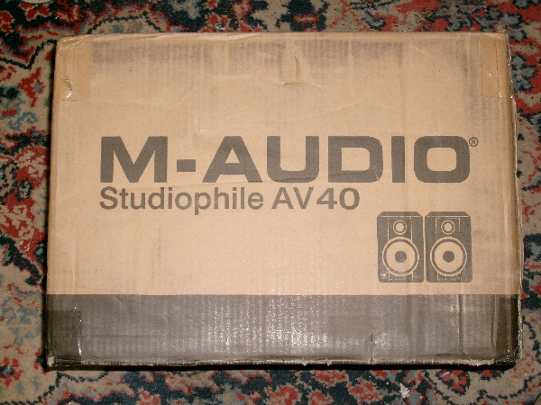
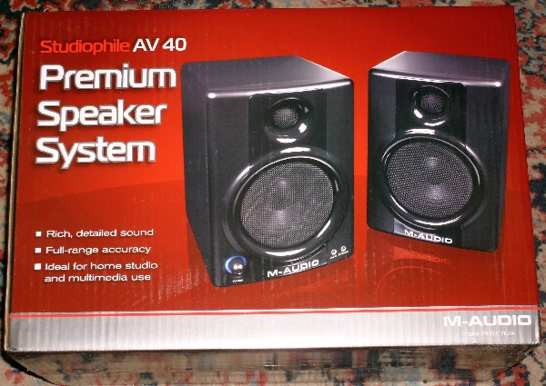
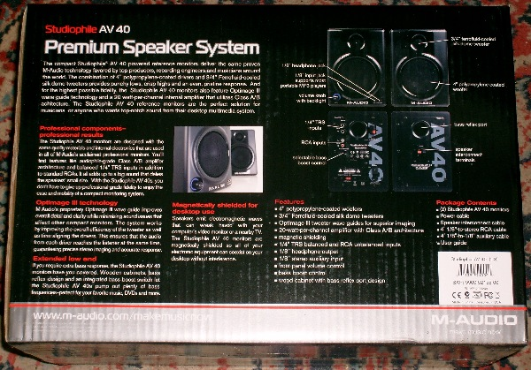
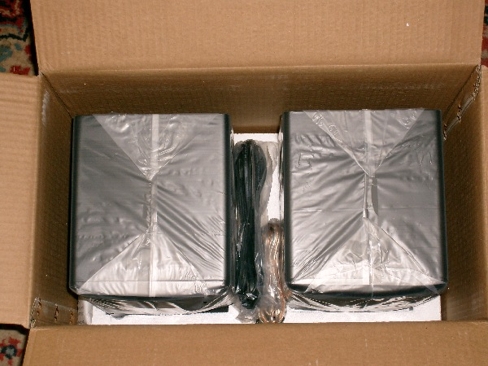
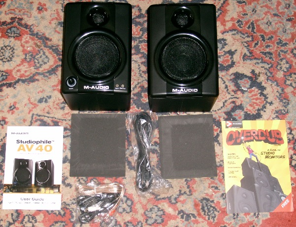
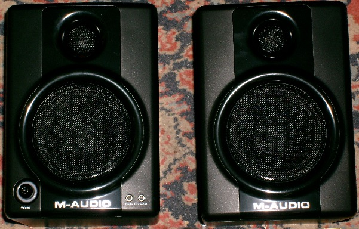
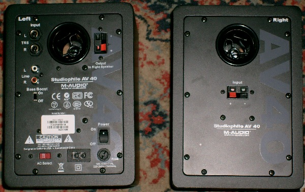
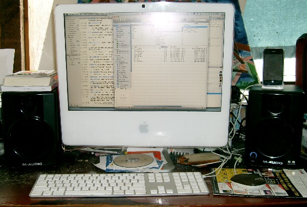

I finally upgraded the speakers on my 3-year-old iMac. Have been using a $40 Logitech 2.1 system up to now. They were OK, but nothing to write home about. I took the next step, paying Amazon $150 for a smallish pair of near-field monitors, the M-Audio Studiophile AV 40 Powered Speakers (M-Audio product page).
In order to give them a fair shake, I reimported about 100 CDs in Apple Lossless format. I've got a NuForce Icon uDAC on order ($99). The uDAC replaces my computer's internal Digital-to-Analog Converter (DAC) and pre-amp with much higher quality electronics, taking the digital music from the USB port, and turning it into a 2-volt analog signal on RCA jacks and a 1/4" headphone jack. According to this Head-Fi.org forum post, the uDAC beats many similar components costing two to three times as much. Looking forward to hearing the improvement.
Click on any image below for a larger version. For the full-resolution image, remove the "-1024x768" from the larger image name.
       
Shipping Box
Display Box
Back of Display Box
Top of Box Opened
Contents, speakers, non-slip mats, power cord, signal cords, docs
Front of Speakers
Back of Speakers
Speakers with my iMac